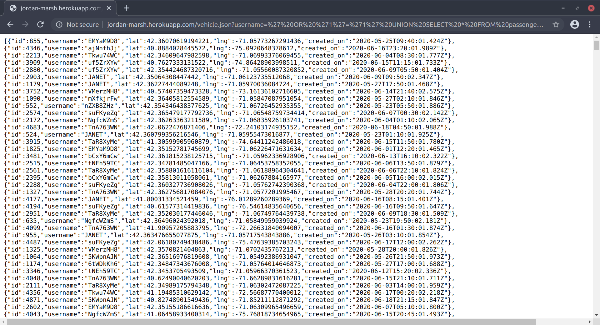
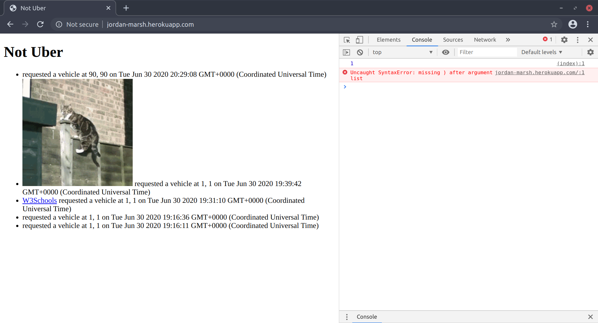

Introduction
Not Uber is a ride hailing service that
- allows users to post ride requests and get available vehicles near them;
- allows vehicles to update their locations;
- supports searching for user request history based on their usernames;
- supports searching for vehicle location history based on their usernames;
- displays all user requests on index page.
The purpose of this report is to address security and privacy issues that exists in Not Uber.
Methodology
Every entry point in the application that interacts with database is tested for security vulnerability. This includes:
- whether an attacker can get access to data that is supposed to be hidden from general users;
- whether an attacker can inject malicious data into database that may affect other users when accessed.
Chrome DevTools and cURL are used for testing.
Abstract of Findings
Here is an overview of the security and privacy issues identified in testing.
- A general user can search for ride request history using username, but an attacker can exploit this to get access to the entire database.
- A general user can search for vehicle location history using username, but an attacker can exploit this to get access to the entire database.
- A general user can request for a ride by submitting username and location, but an attacker can exploit this to inject malicious code into database that can attack other users' browser when accessed.
Issues Found
SQL Injection #1
- Location
- This issue was identified on GET /vehicle.json API.
- Severity of issue
- SQL injection vulnerabilities are highly severe because they are "very prevalent", "can result in data loss, corruption, or disclosure to unauthorized parties, loss of accountability, or denial of access", and "almost any source of data can be an injection vector" (OWASP Top Ten 2017). And SQL injection received a severity score of 24.54 in The CWE Top 25, ranking the sixth among all the software weaknesses (The CWE Top 25).
- Description of issue
- In the source code of the application, the username sent to GET /vehicle.json API is directly concatenated into the query string without verification. This allows an attacker to interfere with the query to view hidden data.
- Proof of vulnerability
- 
As we can see from the screenshot, by setting the username as'+OR+'1'='1'+UNION+SELECT+*+FROM+passengers+WHERE+'1'='1, an attacker can get access to the entire database. - Resolution
- SQL injection can be prevented by using a "prepared statement", which means to use parameterized queries. In this case, we can change the source code of GET /vehicle.json API as:
app.get('/vehicle.json', function(request, response) { var usernameEntry = request.query.username; if (usernameEntry == undefined || usernameEntry == null) { response.send("[]"); } else { theQuery = "SELECT * FROM vehicles WHERE username = '$1'"; client.query(theQuery, [usernameEntry], (error, result) => { if (!error) { response.send(result.rows); } }); } });By doing this, the database is able to distinguish between code and data. Even if some malicious SQL command is inserted as username by an attacker, the parameterized query would not execute it but would instead look for a username which literally matches the entire string.
SQL Injection #2
- Location
- This issue was identified on GET /passenger.json API.
- Severity of issue
- Highly severe.
- Description of issue
- In the source code of the application, the username sent to GET /passengers.json API is directly concatenated into the query string without verification. This allows an attacker to interfere with the query to view hidden data.
- Proof of vulnerability
As we can see from the screenshot, by setting the username as'+OR+'1='1'+UNION+SELECT+*+FROM+vehicles+WHERE+'1'='1, an attacker can get access to the entire database.- Resolution
- By using parameterized queries, we change the source code of GET passenger.json API as:
app.get('/passenger.json', function(request, response) { var usernameEntry = request.query.username; if (usernameEntry == undefined || usernameEntry == null) { response.send("[]"); } else { theQuery = "SELECT * FROM passengers WHERE username = '$1'"; client.query(theQuery, [usernameEntry], (error, result) => { if (!error) { response.send(result.rows); } }); } });
Cross-site Scripting
- Location
- This issue was identified on POST /rides API and GET / API.
- Severity of issue
- Cross-site scripting is highly severe because it is "the second most prevalent issue in the OWASP Top 10, and is found in around two thirds of all applications", and "the impact of XSS is moderate for reflected and DOM XSS, and severe for stored XSS" (OWASP Top Ten 2017). And XSS received a severe score of 45.69 in The CWE Top 25, ranking the second among all software weaknesses. (The CWE Top 25).
- Description of issue
- In the source code of the application, the username sent to POST /rides API is saved in the database and will be directly displayed when another user access to GET / API. This allows an attacker to execute arbitrary HTML and JavaScript in the victim's browser.
- Proof of vulnerability
- 
As we can see from the screenshot, by sending a request like"username=<script>console.log(1);</script>&lat=90&lng=90", an attakcer can execute the JavaScript command in the victim's browser. - Resolution
- XSS can be prevented by escaping user inputs. We can change the source code of POST /rides API by adding a line of code after we get the username in the request.
app.post('/rides', function(requst, response) { response.header("Access-Control-Allow-Origin", "*"); response.header("Access-Control-Allow-Headers", "X-Requested-With"); var username = request.body.username; username = validator.escape(username); /* ... same as original code ... */ });By doing this, any HTML code inserted in username will not be executed.
Conclusion
As noted in this report, it is always better to use parameterized queries and escaped user inputs in our applications. For more means to prevent SQL injection, stored procedures and whitelist input validation are also worth consideration.